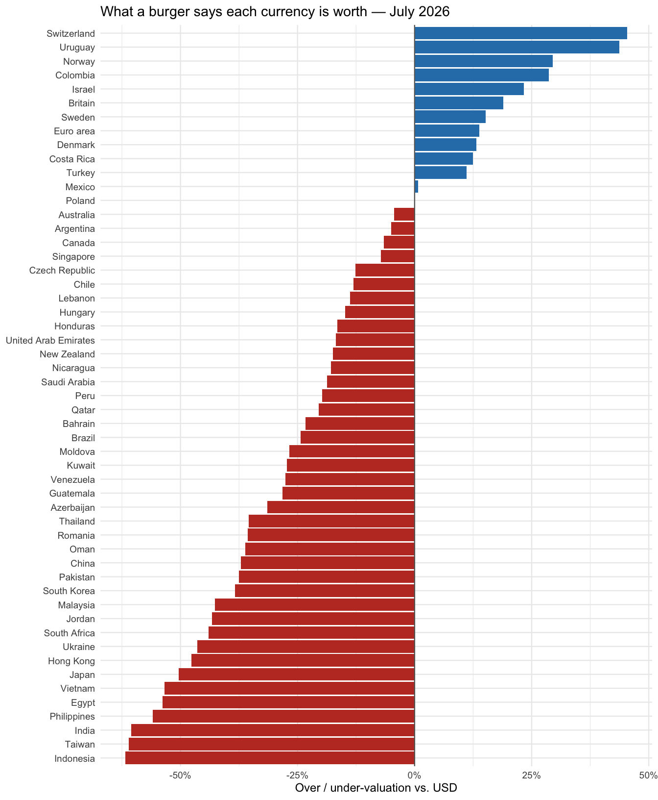
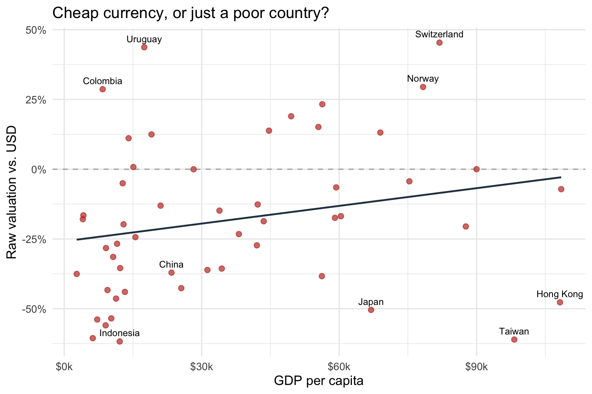

Exchange rates are supposed to tell you what a currency is worth, but on their own they tell you almost nothing about whether a currency is cheap or expensive. A dollar buys about 150 yen — is that a lot or a little? The only way to answer is to ask what the same thing costs in both places. In 1986 The Economist picked a gloriously simple “same thing”: a McDonald’s Big Mac, sold in nearly every country to roughly the same recipe. If a Big Mac costs far less in one country than in the US once you convert at the market exchange rate, that country’s currency looks undervalued — your dollars go further than they “should.”
This post uses 25 years of Economist Big Mac data to ask a question that is sillier than it sounds and more serious than it looks: which currencies does a hamburger call cheap or dear — and does that verdict survive once you account for how rich each country is? The three figures build the answer, and the twist is in the second one.
The data and the one transformation that matters
The data come straight from The Economist’s public Big Mac repository — read directly from its raw CSV URL, so the whole analysis is reproducible from code. It covers 54 currencies, twice a year, back to 2000.
The entire index rests on one small transformation. For each country I take the local Big Mac price, convert it to dollars at the market exchange rate, and compare it to the US price:
\[\text{raw valuation} = \frac{\text{Big Mac price in USD}}{\text{US Big Mac price}} - 1\]
A value of −0.40 means a currency’s burger is 40% cheaper than America’s — the currency is 40% “undervalued” against the dollar on this measure. That is the whole idea: purchasing-power parity, reduced to a sandwich.
Code
# Reproducible fetch: pull once from the official repo, then cache a snapshot so# every later render reads the same data offline. Set refresh <- TRUE to re-pull.refresh <-FALSEdata_url <-"https://raw.githubusercontent.com/TheEconomist/big-mac-data/master/output-data/big-mac-full-index.csv"snap_file <-here("blog", "posts", "post4", "data", "big-mac-full-index.csv")if (!refresh &&file.exists(snap_file)) { bmac_raw <-read_csv(snap_file, show_col_types =FALSE)} else { bmac_raw <-read_csv(data_url, show_col_types =FALSE)write_csv(bmac_raw, snap_file)}# The US price for each date (the yardstick), then compute the raw valuation# ourselves — it reproduces the Economist's USD_raw column exactly.us_price <- bmac_raw |>filter(iso_a3 =="USA") |>select(date, us_price = dollar_price)bmac <- bmac_raw |>left_join(us_price, by ="date") |>mutate(dollar_price = local_price / dollar_ex, # burger price in USDval_raw = dollar_price / us_price -1, # our transformation (= USD_raw)val_adj = USD_adjusted # GDP-adjusted version (see Fig 2) )latest <-max(bmac$date)latest_lab <-format(latest, "%B %Y")
What the burger says
As of July 2026, an American Big Mac costs about $6.22, and the index covers 54 currencies. Figure 1 lines them all up from cheapest to dearest against the dollar.
Code
snap |>filter(iso_a3 !="USA") |>mutate(name =reorder(name, val_raw)) |>ggplot(aes(val_raw, name, fill = val_raw >0)) +geom_col() +geom_vline(xintercept =0, colour ="grey40") +scale_fill_manual(values =c(`FALSE`="#c0392b", `TRUE`="#2c7fb8"), guide ="none") +scale_x_continuous(labels =label_percent()) +labs(x ="Over / under-valuation vs. USD", y =NULL,title =paste0("What a burger says each currency is worth — ", latest_lab)) +theme_minimal(base_size =9)

Figure 1: Big Mac over/under-valuation against the US dollar, latest snapshot. Red bars = currencies a burger says are undervalued (your dollars go further); blue = overvalued.
The spread is enormous: the Switzerland franc looks roughly 45% too dear, while the Indonesia currency looks about 62% too cheap. Taken at face value, that would mean half the emerging world is running drastically “undervalued” currencies. But that face-value reading is a trap — and Figure 2 is where it springs.
Code
# only countries with GDP data can go on this chartsnap_bs <- snap |>filter(!is.na(GDP_bigmac), !is.na(val_raw))lab_df <- snap_bs |>mutate(resid =resid(lm(val_raw ~ GDP_bigmac, data = snap_bs))) |>filter(currency_code %in%c("JPY", "CNY", "CHF", "NOK", "IDR", "INR") |abs(resid) >=quantile(abs(resid), 0.9, na.rm =TRUE))ggplot(snap_bs, aes(GDP_bigmac, val_raw)) +geom_hline(yintercept =0, colour ="grey70", linetype ="dashed") +geom_smooth(method ="lm", se =FALSE, colour ="#2c3e50", linewidth =0.8) +geom_point(colour ="#c0392b", alpha =0.7, size =2) +geom_text(data = lab_df, aes(label = name), size =3, vjust =-0.8,check_overlap =TRUE) +scale_x_continuous(labels =label_dollar(scale =1/1000, suffix ="k")) +scale_y_continuous(labels =label_percent()) +labs(x ="GDP per capita", y ="Raw valuation vs. USD",title ="Cheap currency, or just a poor country?") +theme_minimal(base_size =12)

Figure 2: The catch: richer countries have dearer burgers. Each point is a currency; the line is the average relationship. Points far below the line are cheap even for their income — genuinely undervalued — while points above are genuinely dear.
The line slopes up: richer countries really do have pricier burgers, because wages, rent and service costs — the non-traded ingredients — rise with income. Economists call this the Balassa-Samuelson effect, and it means a poor country’s “undervalued” currency may be priced exactly right for how poor it is. So part of what Figure 1 calls cheapness is just income in disguise.
But only part. The relationship is loose — the correlation between income and valuation is just 0.23, a rise of about +2.1 points per extra $10k of GDP per capita. Income nudges burger prices; it does not dictate them. The vertical distance from the line is the piece income can’t explain — the currency’s genuine mispricing, which is exactly what The Economist’s “GDP-adjusted” index measures. In other words, the burger survives the obvious objection: most of the cheapness is real.
Figure 3 puts one currency on the clock — the Japanese yen, the FX story of the decade.
Figure 3: The yen against the dollar on the Big Mac index, raw and GDP-adjusted, 2000–present. The yen went from overvalued at the start of the century to its most undervalued reading on record.
In 2000 the yen was actually +24%overvalued on the burger — a dollar bought a cheap American lunch and an expensive Tokyo one. By July 2026 the same measure reads about -50%undervalued, the weakest in the 25-year series. The point that matters for an FX view is that the GDP-adjusted line sits almost on top of the raw one, at roughly -47%: Japan is a rich country, so Balassa-Samuelson says its burger should be expensive — yet the yen is cheap anyway. This is not a poor- country artifact. It is a genuinely, structurally weak currency, and a hamburger spotted it without reading a single central-bank statement.
Takeaway
The Big Mac index is a joke that keeps being right. Reduced to one sandwich, purchasing-power parity produces a league table that mostly lines up with what FX strategists believe: the Swiss franc is expensive, emerging-market currencies are cheap, and the yen is historically, genuinely weak. The one discipline the burger demands is the Balassa-Samuelson correction in Figure 2 — without it you mistake poor for cheap; with it you can separate the two.
The broader lesson is about transformation, not hamburgers. The raw data — a price and an exchange rate — say nothing on their own. One division turns them into a valuation; one scatter against income turns that valuation into an argument about what’s genuinely mispriced. That is the whole craft of this kind of analysis: the numbers don’t speak until you make them comparable.
Data source: The Economist, Big Mac Index (TheEconomist/big-mac-data on GitHub, MIT-licensed), read programmatically from its raw CSV and cached in data/. Exchange rates and GDP-per-capita figures are those bundled in the dataset. Code to reproduce the analysis is in the linked GitHub repository.
Source Code
---title: "The Burger Standard: What a Hamburger Says About Cheap and Dear Currencies"author: "Siyu Xin"date: 2026-10-05categories: - markets - FX - data visualizationformat: html: toc: true toc-depth: 2 code-fold: true code-tools: true df-print: kable theme: cosmoexecute: warning: false message: false---```{r}#| label: setup#| include: falselibrary(readr) # read the data (direct from a URL)library(dplyr) # data wranglinglibrary(tidyr) # reshapinglibrary(stringr) # labelslibrary(ggplot2) # figureslibrary(scales) # axis formatting (%, $)library(knitr) # kable tableslibrary(here) # project-relative pathsset.seed(6400)options(scipen =999)dir.create(here("blog", "posts", "post4", "data"), showWarnings =FALSE, recursive =TRUE)```# The questionExchange rates are supposed to tell you what a currency is worth, but on their ownthey tell you almost nothing about whether a currency is *cheap* or *expensive*. Adollar buys about 150 yen — is that a lot or a little? The only way to answer is toask what the same thing costs in both places. In 1986 *The Economist* picked agloriously simple "same thing": a McDonald's Big Mac, sold in nearly every countryto roughly the same recipe. If a Big Mac costs far less in one country than in theUS once you convert at the market exchange rate, that country's currency looks**undervalued** — your dollars go further than they "should."This post uses 25 years of *Economist* Big Mac data to ask a question that issillier than it sounds and more serious than it looks: **which currencies does ahamburger call cheap or dear — and does that verdict survive once you account forhow rich each country is?** The three figures build the answer, and the twist is inthe second one.# The data and the one transformation that mattersThe data come straight from *The Economist's* public [Big Macrepository](https://github.com/TheEconomist/big-mac-data) — read directly from itsraw CSV URL, so the whole analysis is reproducible from code. It covers 54currencies, twice a year, back to 2000.The entire index rests on one small transformation. For each country I take thelocal Big Mac price, convert it to dollars at the market exchange rate, and compareit to the US price:$$\text{raw valuation} = \frac{\text{Big Mac price in USD}}{\text{US Big Mac price}} - 1$$A value of −0.40 means a currency's burger is 40% cheaper than America's — thecurrency is 40% "undervalued" against the dollar on this measure. That is the wholeidea: purchasing-power parity, reduced to a sandwich.```{r}#| label: load-data# Reproducible fetch: pull once from the official repo, then cache a snapshot so# every later render reads the same data offline. Set refresh <- TRUE to re-pull.refresh <-FALSEdata_url <-"https://raw.githubusercontent.com/TheEconomist/big-mac-data/master/output-data/big-mac-full-index.csv"snap_file <-here("blog", "posts", "post4", "data", "big-mac-full-index.csv")if (!refresh &&file.exists(snap_file)) { bmac_raw <-read_csv(snap_file, show_col_types =FALSE)} else { bmac_raw <-read_csv(data_url, show_col_types =FALSE)write_csv(bmac_raw, snap_file)}# The US price for each date (the yardstick), then compute the raw valuation# ourselves — it reproduces the Economist's USD_raw column exactly.us_price <- bmac_raw |>filter(iso_a3 =="USA") |>select(date, us_price = dollar_price)bmac <- bmac_raw |>left_join(us_price, by ="date") |>mutate(dollar_price = local_price / dollar_ex, # burger price in USDval_raw = dollar_price / us_price -1, # our transformation (= USD_raw)val_adj = USD_adjusted # GDP-adjusted version (see Fig 2) )latest <-max(bmac$date)latest_lab <-format(latest, "%B %Y")``````{r}#| label: prose-stats#| include: falsesnap <- bmac |>filter(date == latest)us_now <-round(unique(snap$us_price), 2)n_cur <-n_distinct(snap$currency_code)cheapest <- snap |>filter(iso_a3 !="USA") |>slice_min(val_raw, n =1)dearest <- snap |>slice_max(val_raw, n =1)bs_fit <-lm(val_raw ~ GDP_bigmac, data = snap)bs_slope <-coef(bs_fit)[["GDP_bigmac"]] *10000*100# %pts per $10k GDPbs_r <-cor(snap$GDP_bigmac, snap$val_raw, use ="complete.obs")jpy_now <- bmac |>filter(currency_code =="JPY", date == latest)jpy_raw_now<- jpy_now$val_raw *100jpy_adj_now<- jpy_now$val_adj *100jpy_2000 <- bmac |>filter(currency_code =="JPY") |>slice_min(date, n =1)jpy_raw_00 <- jpy_2000$val_raw *100```# What the burger saysAs of **`r latest_lab`**, an American Big Mac costs about **$`r us_now`**, and theindex covers **`r n_cur`** currencies. Figure 1 lines them all up from cheapest todearest against the dollar.```{r}#| label: fig-ranking#| fig-cap: "Big Mac over/under-valuation against the US dollar, latest snapshot. Red bars = currencies a burger says are undervalued (your dollars go further); blue = overvalued."#| fig-width: 7#| fig-height: 8.5snap |>filter(iso_a3 !="USA") |>mutate(name =reorder(name, val_raw)) |>ggplot(aes(val_raw, name, fill = val_raw >0)) +geom_col() +geom_vline(xintercept =0, colour ="grey40") +scale_fill_manual(values =c(`FALSE`="#c0392b", `TRUE`="#2c7fb8"), guide ="none") +scale_x_continuous(labels =label_percent()) +labs(x ="Over / under-valuation vs. USD", y =NULL,title =paste0("What a burger says each currency is worth — ", latest_lab)) +theme_minimal(base_size =9)```The spread is enormous: the **`r dearest$name`** franc looks roughly**`r round(dearest$val_raw*100)`%** too dear, while the**`r cheapest$name`** currency looks about **`r round(abs(cheapest$val_raw*100))`%**too cheap. Taken at face value, that would mean half the emerging world is runningdrastically "undervalued" currencies. But that face-value reading is a trap — andFigure 2 is where it springs.```{r}#| label: fig-balassa#| fig-cap: "The catch: richer countries have dearer burgers. Each point is a currency; the line is the average relationship. Points far below the line are cheap even for their income — genuinely undervalued — while points above are genuinely dear."#| fig-width: 7.5#| fig-height: 5# only countries with GDP data can go on this chartsnap_bs <- snap |>filter(!is.na(GDP_bigmac), !is.na(val_raw))lab_df <- snap_bs |>mutate(resid =resid(lm(val_raw ~ GDP_bigmac, data = snap_bs))) |>filter(currency_code %in%c("JPY", "CNY", "CHF", "NOK", "IDR", "INR") |abs(resid) >=quantile(abs(resid), 0.9, na.rm =TRUE))ggplot(snap_bs, aes(GDP_bigmac, val_raw)) +geom_hline(yintercept =0, colour ="grey70", linetype ="dashed") +geom_smooth(method ="lm", se =FALSE, colour ="#2c3e50", linewidth =0.8) +geom_point(colour ="#c0392b", alpha =0.7, size =2) +geom_text(data = lab_df, aes(label = name), size =3, vjust =-0.8,check_overlap =TRUE) +scale_x_continuous(labels =label_dollar(scale =1/1000, suffix ="k")) +scale_y_continuous(labels =label_percent()) +labs(x ="GDP per capita", y ="Raw valuation vs. USD",title ="Cheap currency, or just a poor country?") +theme_minimal(base_size =12)```The line slopes up: richer countries really do have pricier burgers, because wages,rent and service costs — the non-traded ingredients — rise with income. Economistscall this the Balassa-Samuelson effect, and it means a poor country's "undervalued"currency may be priced exactly right for how poor it is. So part of what Figure 1calls cheapness is just income in disguise.But only *part*. The relationship is loose — the correlation between income andvaluation is just **`r round(bs_r, 2)`**, a rise of about**`r sprintf('%+.1f', bs_slope)`** points per extra $10k of GDP per capita. Incomenudges burger prices; it does not dictate them. The vertical distance from the lineis the piece income *can't* explain — the currency's genuine mispricing, which isexactly what *The Economist's* "GDP-adjusted" index measures. In other words, theburger survives the obvious objection: most of the cheapness is real.Figure 3 puts one currency on the clock — the Japanese yen, the FX story of thedecade.```{r}#| label: fig-jpy#| fig-cap: "The yen against the dollar on the Big Mac index, raw and GDP-adjusted, 2000–present. The yen went from overvalued at the start of the century to its most undervalued reading on record."#| fig-width: 7.5#| fig-height: 4.5bmac |>filter(currency_code =="JPY") |>select(date, Raw = val_raw, `GDP-adjusted`= val_adj) |>pivot_longer(-date, names_to ="measure", values_to ="val") |>ggplot(aes(date, val, colour = measure)) +geom_hline(yintercept =0, colour ="grey70", linetype ="dashed") +geom_line(linewidth =1) +geom_point(size =1.4) +scale_colour_manual(values =c(Raw ="#c0392b", `GDP-adjusted`="#2c3e50"),name =NULL) +scale_y_continuous(labels =label_percent()) +labs(x =NULL, y ="Yen valuation vs. USD",title ="A burger tracks the yen's long slide") +theme_minimal(base_size =12) +theme(legend.position ="top")```In 2000 the yen was actually **`r sprintf('%+.0f', jpy_raw_00)`%** *overvalued* onthe burger — a dollar bought a cheap American lunch and an expensive Tokyo one. By**`r latest_lab`** the same measure reads about **`r round(jpy_raw_now)`%***undervalued*, the weakest in the 25-year series. The point that matters for an FXview is that the GDP-adjusted line sits almost on top of the raw one, at roughly**`r round(jpy_adj_now)`%**: Japan is a rich country, so Balassa-Samuelson says itsburger *should* be expensive — yet the yen is cheap anyway. This is not a poor-country artifact. It is a genuinely, structurally weak currency, and a hamburgerspotted it without reading a single central-bank statement.# TakeawayThe Big Mac index is a joke that keeps being right. Reduced to one sandwich,purchasing-power parity produces a league table that mostly lines up with what FXstrategists believe: the Swiss franc is expensive, emerging-market currencies arecheap, and the yen is historically, genuinely weak. The one discipline the burgerdemands is the Balassa-Samuelson correction in Figure 2 — without it you mistake*poor* for *cheap*; with it you can separate the two.The broader lesson is about transformation, not hamburgers. The raw data — a priceand an exchange rate — say nothing on their own. One division turns them into avaluation; one scatter against income turns that valuation into an argument aboutwhat's genuinely mispriced. That is the whole craft of this kind of analysis: thenumbers don't speak until you make them comparable.---*Data source: The Economist, Big Mac Index (`TheEconomist/big-mac-data` on GitHub,MIT-licensed), read programmatically from its raw CSV and cached in `data/`.Exchange rates and GDP-per-capita figures are those bundled in the dataset. Code toreproduce the analysis is in the linked GitHub repository.*